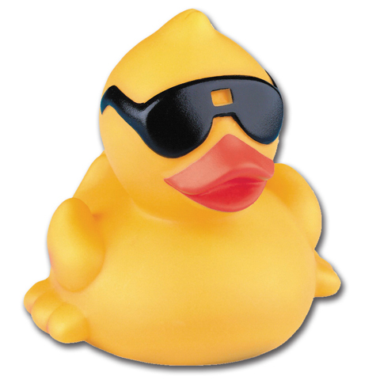
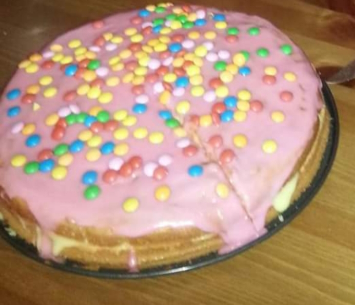

Plus- en minpunten
Voordeel: Schattig.
Nadeel: Hij klauwt.
Omschrijving
Luigi (Japans: ルイージ/Ruīji) is een videospelpersonage gemaakt door Nintendo's game-ontwerper Shigeru Miyamoto. Hij is de jongere en langere broer van Mario, en draagt een groen uniform en een groen petje met de letter "L" erop. Hij helpt Mario vaak met opdrachten en heeft dezelfde vijand: de kwade Bowser.
Luigi komt ook voor in de serie van Mario Party. Hij heeft ook eigen spellen, genaamd Luigi's Mansion. Het spel kreeg in 2013 een vervolg op de Nintendo 3DS, genaamd Luigi's Mansion: Dark Moon. Later kwam voor de Wii U ook New Super Luigi U uit, de 'Luigi'-versie van New Super Mario Bros. U. Deze games, samen met Mario & Luigi: Dream Team waren onderdeel van het zogenaamde "Jaar van Luigi", om het dertigjarige bestaan van Luigi te vieren. In 2019 kwam op de Nintendo Switch de derde game in de Luigi's Mansion-serie uit, namelijk Luigi's Mansion 3.Gerelateerde producten

Tanjiro plushie
Als je dood van binnen voelt en je wilt een herkenbaar persoon is dit iets dat je kan kopen ig.

Duckie
Ook voor als je dood van binnen voelt. Dit product geneest je ziel.

Cake
MMMMMM cake.